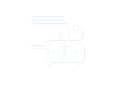

Nos Produits
Cash à Cash

Transfert d'argent classique d'une personne physique à une autre personne physique.

Cash à Cash
Transfert d'argent classique d'une personne physique à une autre personne physique.
C'est le schéma classique de transfert qui permet de transférer en quelques minutes seulement de l'argent d'une personne physique à une autre personne physique.
En règle générale, les fonds sont remis en espèces au bénéficiaire et dans la monnaie locale du pays de réception.
S'il le souhaite, l'expéditeur sera informé par un SMS lorsque les fonds seront remis à son bénéficiaire.

Comment éffectuer un Cash à Cash?
ÉTAPE 1
Trouvez l'agent QuickCash le plus proche de vous.
ÉTAPE 2
Rendez-vous dans un point de vente QuickCash, avec une pièce d’identité en cours de validité.
ÉTAPE 3
Remplissez le formulaire d’envoi puis remettez-le au guichet, ainsi que le montant à envoyer et les frais du transfert.
ÉTAPE 4
Après avoir saisi les informations et validé l’opération, l’opérateur vous délivrera un reçu sur lequel figurera un numéro de transfert comportant 12 chiffres.
ÉTAPE 5
Communiquez au bénéficiaire du transfert le numéro de transfert unique, le mot de passe que vous avez inscrit sur le formulaire d’envoi, et le montant qu’il doit percevoir.
Comment recevoir un Cash à Cash?
ÉTAPE 1
Demandez à l'expéditeur de communiquer:
- Le numéro de controle (MTCN)
- Le mot de passe.
- Le montant à percevoir.
- Le destinataire doit communiquer le nom du l’expéditeur.
ÉTAPE 2
Rendez-vous dans un point de vente QuickCash présenter l’une des pièces suivantes à l’agent QUICKCASH:
- Une carte d'identité valide
- Un passeport déjà utilisé
- Un permis de conduire biométrique
- Une Carte consulaire biométrique
ÉTAPE 3
- Remplissez le formulaire de paiement, puis remettez-le à l’agent QuickCash.
- Après avoir vérifié les informations de transfert, l’agent vous donnera le reçu de paiement suivi de l'argent en devise locale.
Cash à Compte
Designed for migrants, it allows to transfer money directly into a bank account original, from the OUICKCASH network.
Cash à Compte
Transfert d'argent d'une personne sur compte Bancaire”. Ce produit est Conçu pour les migrants, Il permet de transférer de l’argent directement sur un compte bancaire d’origine, à partir du réseau QuickCash.
La recherche d'une situation financière stable conduit souvent à la migration de personnes à travers le monde.
Le rapatriement des économies réalisées après de nombreuses années de dur labeur dans son pays d'origine est souvent un casse-tête.
Adapté aux besoins des migrants, le Cash à compte permet de transférer de l'argent directement à partir de Quickcash sur un compte bancaire, dans son pays d'origine.

Et les fonds transférés seront crédités sur le compte bancaire du bénéficiaire dans un délai court.
Ce produit permet ainsi aux migrants d’épargner en toute sécurité et en toute discrétion sur leurs projets dans leur pays d’origine.
Comment éffectuer um Cash à Compte ?
ÉTAPE 1
Trouvez un point de vente QuickCash proche de chez vous.
ÉTAPE 2
Rendez-vous dans um point de vente QuickCash avec une carte d'identité valide.
ÉTAPE 3
Remplissez le formulaire (communiquez le numéro du compte et le nom de la banque de domiciliation), puis remettez- le au guichet, ainsi que le montant à envoyer et les frais du transfert.
STEP 4
Après avoir saisi les informations du transfert et procédé à sa validation, l’opérateur vous délivrera un reçu sur lequel figurera un numéro de transfert comportant 12 chiffres. Conservez-le précieusement pour toute réclamation.
STEP 5
The money is credited to your account by your manager in maximum 48 hours.
Cash à Cash
Transfert d'argent classique d'une personne physique à une autre personne physique.
C'est le schéma classique de transfert qui permet de transférer en quelques minutes seulement de l'argent d'une personne physique à une autre personne physique.
En règle générale, les fonds sont remis en espèces au bénéficiaire et dans la monnaie locale du pays de réception.
S'il le souhaite, l'expéditeur sera informé par un SMS lorsque les fonds seront remis à son bénéficiaire.
Comment éffectuer un Cash à Cash?
ÉTAPE 1
Trouvez l'agent QuickCash le plus proche de vous.
ÉTAPE 2
endez-vous dans un point de vente QuickCash, avec une pièce d’identité en cours de validité.
ÉTAPE 3
Remplissez le formulaire d’envoi puis remettez-le au guichet, ainsi que le montant à envoyer et les frais du transfert.
ÉTAPE 4
Après avoir saisi les informations et validé l’opération, l’opérateur vous délivrera un reçu sur lequel figurera un numéro de transfert comportant 12 chiffres.
ÉTAPE 5
Communiquez au bénéficiaire du transfert le numéro de transfert unique, le mot de passe que vous avez inscrit sur le formulaire d’envoi, et le montant qu’il doit percevoir
-The control number of the transfer
-The password used on the Sender Form
-The amount to be received.
Comment recevoir un Cash à Cash?
ÉTAPE 1
Demandez à l'expéditeur de communiquer:
- Le numéro de controle (MTCN)
- Le mot de passe
- Le montant à percevoir
- Le destinataire doit communiquer le nom du l’expéditeur
ÉTAPE 2
Rendez-vous dans un point de vente QuickCash présenter l’une des pièces suivantes à l’agent QUICKCASH:
- Une carte d'identité valide
- Un passeport déjà utilisé
- Un permis de conduire biométrique
- Une Carte consulaire biométrique
ÉTAPE 3
- “Remplissez le formulaire de paiement, puis remettez-le à l’agent QuickCash.
- Après avoir vérifié les informations de transfert, l’agent vous donnera le reçu de paiement suivi de l'argent en devise locale.
Cash to Card
It is the transfer of money from an individual onto a card
Want more freedom? The Cash to Card may surely be suitable for you. In 2013, QuickCash is launching its Cash to Card.
It allows you to transfer money to a card. The cardholder can then make the withdrawal in all ATMs of banks affiliated with the GIM-UEMOA network. Operations can be carried out 7/7 and 24/24h.

The card also allows you to make purchases and it functions like a bank account. The amount transferred can be fully or partly withdrawn as needed until exhausted. It is ideal for travelers, students and the unbanked.
How to proceed with Cash to Card transfer?
ÉTAPE 1
Find the nearest QuickCash agency to you.
ÉTAPE 2
Visit the QuickCash agency with a valid identity card.
ÉTAPE 3
Fill out the Form (communicate the card number and cardholder’s identity) and then submit it to the person behind the counter along with the money to be transferred and the transfer fees.
ÉTAPE 4
After entering all information and validating transaction, the money is directly credited on the card. There is neither a transfer number nor a password to be communicated. However, the operator will issue a receipt containing a transfer number. Keep it safe for any claim.
How to withdraw money from a Cash to Card transfer?
STEP 1
Go to any of GIM-UEMOA ATM (Automatic Teller Machine) with your card.
STEP 2
Insert your card into the slot provided for this purposes and follow the instructions. At the end of the operation, remove your card and keep it for future operations.
Cash to Account
The possibility to transfer money from your location into your bank account
La recherche d'une situation financière stable conduit souvent à la migration de personnes à travers le monde.
Le rapatriement des économies réalisées après de nombreuses années de dur labeur dans son pays d'origine est souvent un casse-tête.
Adapté aux besoins des migrants, le Cash à compte permet de transférer de l'argent directement à partir de Quickcash sur un compte bancaire, dans son pays d'origine.
Et les fonds transférés seront crédités sur le compte bancaire du bénéficiaire dans un délai court.
Ce produit permet ainsi aux migrants d’épargner en toute sécurité et en toute discrétion sur leurs projets dans leur pays d’origine.
Comment éffectuer um Cash à Compte ?
ÉTAPE 1
Trouvez un point de vente QuickCash proche de chez vous.
ÉTAPE 2
Rendez-vous dans um point de vente QuickCash avec une carte d'identité valide.
ÉTAPE 3
Remplissez le formulaire (communiquez le numéro du compte et le nom de la banque de domiciliation), puis remettez- le au guichet, ainsi que le montant à envoyer et les frais du transfert.
ÉTAPE 4
Après avoir saisi les informations du transfert et procédé à sa validation, l’opérateur vous délivrera un reçu sur lequel figurera un numéro de transfert comportant 12 chiffres. Conservez-le précieusement pour toute réclamation.
ÉTAPE 5
L’argent est crédité sur votre compte par votre Gestionnaire dans un délai maximum de 48h.